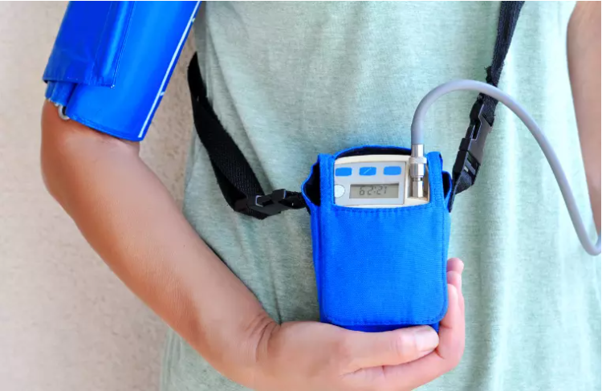

Electrocardiografia
Estudio de la actividad eléctrica del corazón.
Estudio de la actividad eléctrica del corazón.

Estudio de la anatomia, función cardíaca y el flujo sanguíneo.

Evaluación de la respuesta del corazón al ejercicio físico.

Monitoreo continuo de la actividad cardíaca durante 24 horas.

Estudio de la presión arterial durante el ejercicio.

Estudio de la función cardíaca durante el ejercicio con apremio fisico.